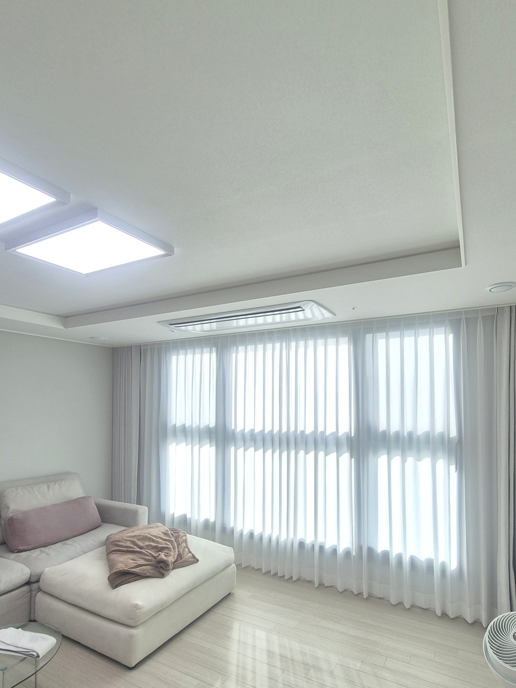
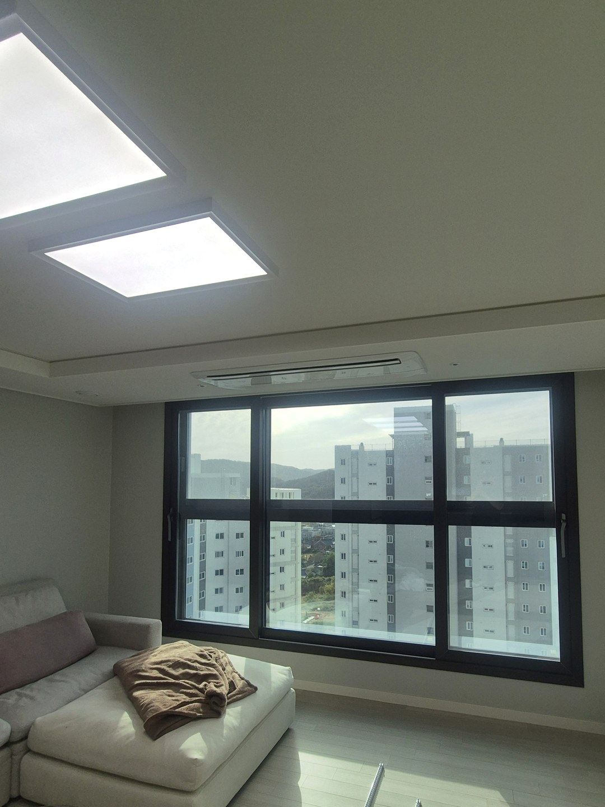
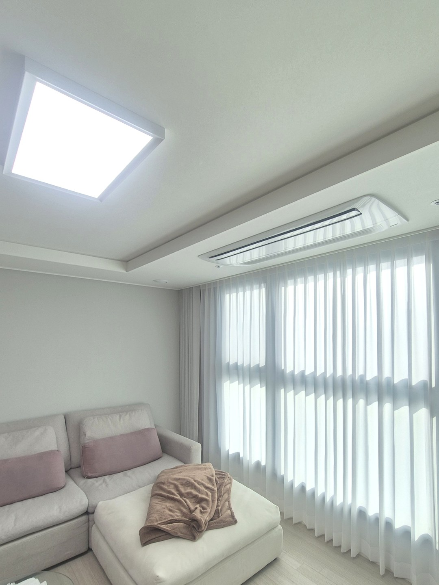
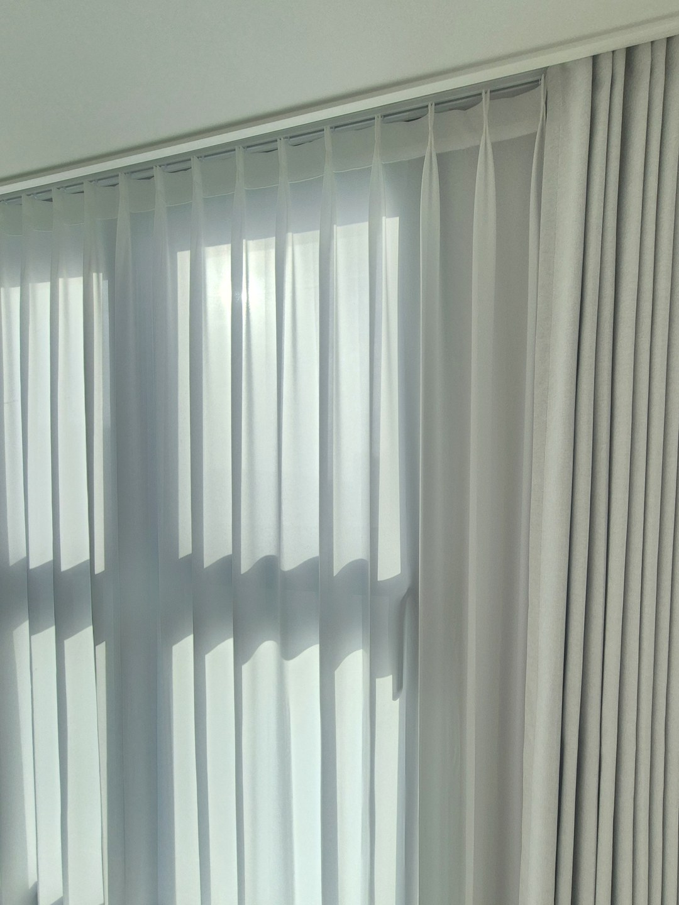
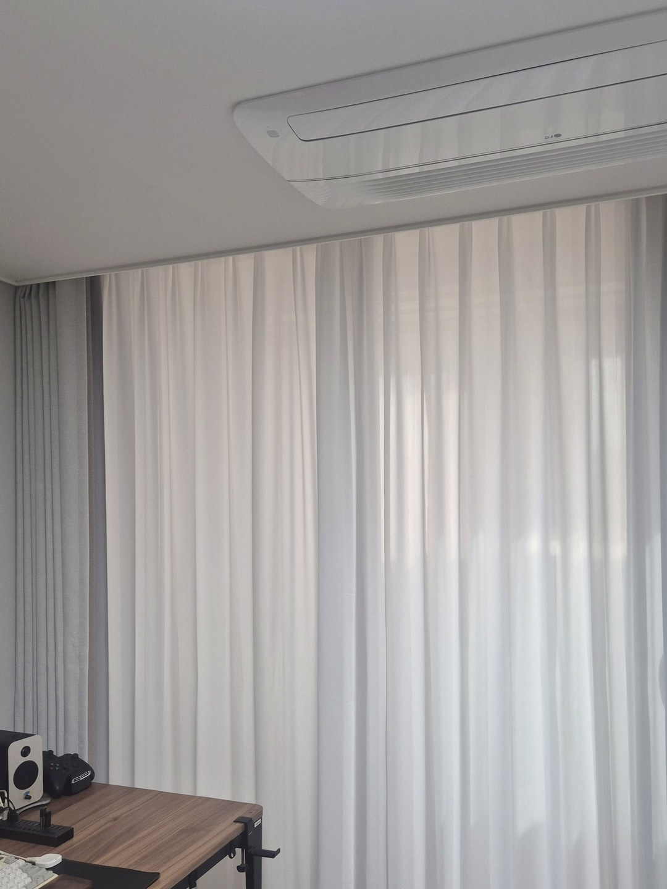
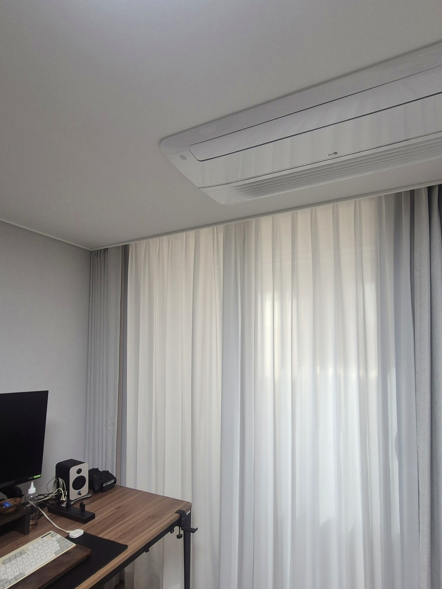

2026년 11월 3일 시공
남울산 노르웨이숲
거실·안방 쉬폰 속커튼과 암막커튼 시공후기

이번 현장은 울산 남구 쪽의 노르웨이숲 아파트입니다.
의뢰는 울산이 아니라 서울에서 왔습니다.
온라인으로 커튼을 판매하는 업체였습니다.
따솜 시공기사 후기를 보시고,
울산에 시공할 집이 있는데 맡아 줄 수 있느냐고 물어 오셨습니다.
판매한 곳과 다는 사람이 다른 현장
이런 일은 판매업체, 고객님, 시공하는 사람이 모두 따로입니다.
중간에 말이 한 번 더 건너가면 날짜가 늘어지기 쉽습니다.
그래서 업체 연락을 받은 뒤 고객님께 직접 전화를 드렸습니다.
통화로 바로 다음 날 일정을 잡았습니다.
제품은 먼저 와 있었습니다

커튼과 블라인드는 판매업체에서 고객님 댁으로 택배를 미리 보내 둔 상태였습니다.
원단을 따로 실을 필요가 없었습니다.
장비만 챙겨서 울산으로 갔습니다.
천장 가운데에는 시스템 에어컨이 있고,
창은 벽 한 면을 거의 다 차지하는 크기였습니다.
거실은 두 겹으로 달았습니다

거실에는 흰 쉬폰 속커튼과 100% 암막커튼을 함께 달았습니다.
두 겹으로 다는 이유는 하루의 쓰임이 다르기 때문입니다.
낮에는 쉬폰만 닫아도 바깥 시선이 흐려지고 빛은 부드럽게 들어옵니다.
밤이나 해가 강한 시간에는 암막을 당겨 막으면 됩니다.

두 겹이 서로 걸리지 않고 따로 움직여야 매일 쓰기 편합니다.
안방도 같은 구성입니다

안방에도 쉬폰 속커튼과 100% 암막커튼을 달았습니다.

창 앞에 책상이 놓인 방이라,
낮에는 쉬폰으로 화면 눈부심을 줄이고 쉴 때는 암막으로 어둡게 쓰실 수 있습니다.
시공을 마친 뒤에는 고객님이 궁금해하신 부분까지 하나씩 설명드리고 마무리했습니다.
온라인으로 산 커튼을 맡기실 때
다른 곳에서 산 제품은 원단과 치수를 따솜이 정한 것이 아닙니다.
길이나 폭이 창과 맞지 않으면 현장에서 바로 고치기 어려울 수 있습니다.
솔직히 이 부분은 달아 보기 전까지 저희도 장담하기 어렵습니다.
그래서 주문할 때 받은 치수표나 제품 사진,
창 전체 사진을 먼저 보내 주시면 달기 전에 한 번 더 살펴봅니다.
일정은 그때그때 다른 시공에 따라 달라질 수 있어,
원하시는 날짜를 함께 알려 주세요.